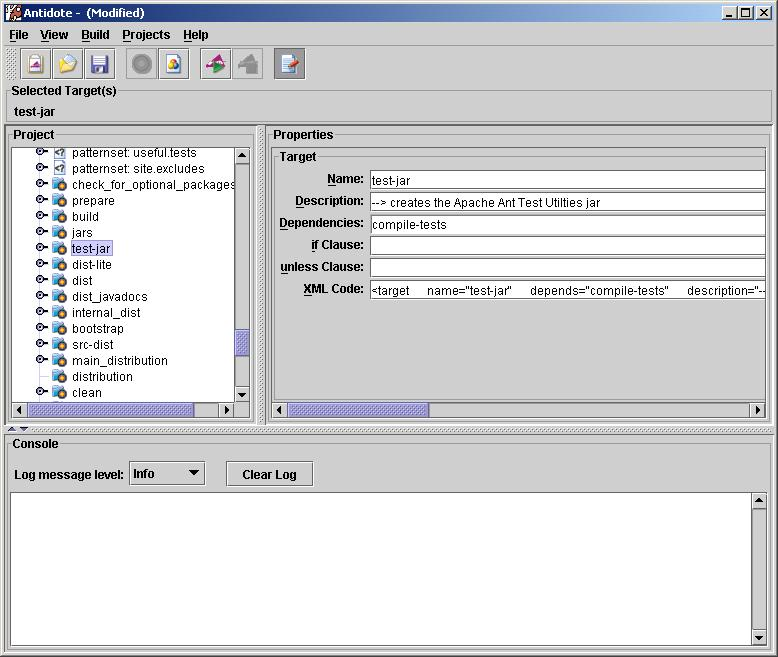

Merging Antelope and giANT
Proposal: Merging Antelope and
giANT
Date: 17 April 2004
By: Dale Anson
Background: Dependency graphing
has been on the feature request list for Antelope for some time.
Version 3.0.4 introduced the first attempt at a dependency graph using
a JTree. The dependency tree is accessed when Antelope is in "edit"
mode and the user right clicks on a target in the edit tree. For
example, the dependency graph (actually tree) might look like this:

This shows that target3 depends on target2 and target3 also has a task
(probably an AntCall) that calls target1 which depends on another
target1 imported from another build file. The dependency tree is linked
to the editor so that clicking on an item in the tree makes the editor
show the xml for that item. While this is okay for simple examples, it
turns out that this is inadequate for more complex dependencies. A tree
model may not be able to adequately show the interrelationships between
the targets. This caused me to look for alternatives:
AntGraph: Antgraph is primarily
an XSLT stylesheet that converts XML from any Ant buildfile into a
"dot" format file, suitable for input into Graphviz.
Graphviz generates a graph based on the dot file. Graphviz is also
platform dependent C code, not Java code, plus has a license that may
or may not be compatible with the Apache style license that Antelope
uses.
GRAND: Grand is a tool to
create visual representation of ant target dependencies. It works by
taking a ant build file and creating a "dot" file. Like AntGraph, this
file need to be post-processed with Graphviz to
produce the actual graph.
I didn't find anything else, so I took a look at GEF, another project
hosted by tigris.org. GEF looked decent, all Java, and uses a BSD
license that is compatible with Antelope's license. I was able to get a
dependency graph together fairly quickly with GEF, but didn't like that
GEF had hard-coded references to Log4J. I don't have anything against
Log4J, but Antelope uses Java 1.4's logging framework. I contacted the
GEF developer list, and volunteered to convert GEF to use Apache's
commons-logging framework so that GEF could easily be decoupled from
Log4J. This put me in contact with Bob Tarting, the project owner for
GEF and the project owner for giANT:
giANT: giANT (Graph Interface
to ANT) allows existing ant build scripts to be read and displayed as a
connected graph of target nodes connected by
dependency nodes.
Bob started giANT around February 2004, so hasn't got too far into
development. He suggested that we might want to consider merging the
projects. The remainder of this document explores that possibility.
Currently Antelope looks like this:

The main purpose of Antelope is to make it easy to run and edit Ant
build files. It works as both a stand-alone application and as a plugin
for jEdit.
Currently, giANT looks like this:
Currently giANT can only read and display ANT scripts. Bob has proposed
that the next stage of development will be to allow creation and
deletion
of targets through interaction with the diagram and editing of the
selected target.
Antidote is the gui provided by the Ant project. It suffers from lack
of development effort and visibility among the Ant community.
Currently, Antidote looks like this:

Antidote does not provide dependency graphing. Editing is tedious as
the editor support is minimal. Antidote does have very good property
editing for build file elements.
Similarities:
From the images of the applications, there are obvious similarities.
giANT has a left panel for the Ant target tree. Antelope has a target
panel in the same location (Antelope changes the button panel to a tree
in Edit mode). giANT has a right panel for an xml editor, Antelope has
an xml editor in the same location. giANT has a bottom panel for
console output, Antelope has a separate tab for output.
There are also similarities with Antidote: Antidote has an output area,
a project tree, and can run targets.